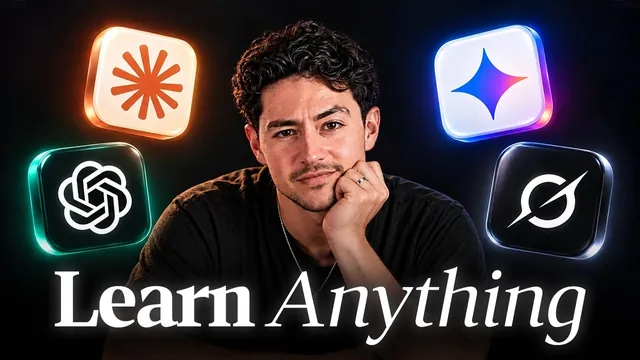

AI로 어려운 걸 남보다 빨리 익히는 법

원본 영상 보기 →
- '이해했다'는 느낌은 증거가 아니에요
- AI의 역할을 바꾸면 결과가 바뀝니다
- 개별 실수가 아니라 뿌리를 고치세요
한 줄 요약
사람은 읽고 듣는 '소비'가 아니라 떠올리고 설명하고 직접 해보는 '산출'로 배웁니다. Nick Saraev가 대부분이 쓰는 '설명자' 말고, AI가 맡을 수 있는 나머지 9가지 학습 역할과 각각의 프롬프트를 정리했어요. 면접관, 지도 제작자, 소크라테스식 질문자, 시험관, 검사자, 청취자, 진단가, 스파링 파트너, 서기입니다.
전체 내용 정리
배운 것 같은 느낌과 실제로 배운 건 다릅니다
Nick Saraev는 행동 신경과학을 전공했고, 이 전략들로 월 매출 40만 달러 비즈니스를 만들었다고 해요.
그가 말하는 핵심은 이겁니다. 대부분은 읽기·시청·챗봇 설명 같은 '소비'로 배운다고 믿지만, 뇌가 기억을 새기고 꺼내는 건 '산출'에 기반한다는 거예요. 능동적으로 회상하고, 예측하고, 설명하고, 현실에서 직접 시도해야 남습니다. 그런데 이 과정은 힘들어서 뇌가 에너지를 아끼려고 계속 피해요.
한 연구 결과가 인상적입니다. 원문을 네 번 다시 읽은 집단은 5분 뒤 83%를 기억했고, 한 번 읽고 세 번 테스트한 집단은 71%였어요. 다시 읽기가 이긴 것처럼 보이죠.
그런데 일주일 뒤에 다시 쟀더니 다시 읽기 집단은 40%로 떨어졌고, 테스트 집단은 61%에 가까웠습니다. 다시 읽기는 최소 50%를 잃었고, 테스트는 손실이 10%에 그쳤어요.
그래서 AI로 빨리 배운다는 건 설명을 더 많이 듣는 게 아닙니다. 산출하는 능력을 키우는 쪽으로 AI를 쓰는 거예요.
대부분은 AI를 '설명자'로만 씁니다
막히면 원문을 붙여넣고 "다른 방식으로 설명해 줘"라고 하죠. 이게 '설명자(Explainer)' 역할인데, 결국 수동적 소비입니다. AI가 할 수 있는 열 가지쯤 되는 역할 중 하나일 뿐이에요.
나머지 아홉 가지는 대부분 산출에 초점이 맞춰져 있습니다.
- 면접관 — 무엇을 모르는지도 모를 때 질문으로 수준을 파악
- 지도 제작자 — 커리큘럼을 짜 줌
- 소크라테스식 질문자 — 이해했다고 착각할 때 생각하게 만듦
- 시험관 — 다 배운 뒤 점수를 매김
- 검사자 — 만든 결과물과 그 과정을 검증
- 청취자 — 내 말로 설명한 걸 듣고 빈틈을 찾음
- 진단가 — 반복되는 실수의 공통 원인을 찾음
- 스파링 파트너 — 실전 상황을 시뮬레이션
- 서기 — 메모를 정리
대표적인 게 간격 반복(spaced repetition)이에요. 100여 년 전 에빙하우스의 망각 곡선에 따르면 복습하지 않은 기억은 급격히 사라지는데, 주기적으로 스스로 테스트할 때마다 곡선이 완만해지고 바닥 기억 강도도 올라갑니다. AI는 플래시카드를 만들고 일정을 관리하고, 스파링 중 틀린 부분을 Anki 같은 앱용 카드로 바꿔 줄 수 있어요.
시작할 땐 면접관과 지도 제작자부터
"XYZ 배우는 것 좀 도와줘" 대신 "내가 이미 얼마나 아는지 파악하게 질문부터 해 줘"라고 해보세요. AI가 목적을 물어봅니다.
코딩을 배우고 싶다고 했는데, 알고 보니 3주 뒤 면접 때문이고, 부트캠프 2주로 기초 파이썬은 알고, 시험은 타이머를 켜고 실시간 코딩하는 방식이라고 해볼게요. 그러면 진짜 목표는 코딩 전체가 아니라 면접 통과예요. 기초 파이썬은 건너뛰고 실전과 같은 시간제한 코딩 테스트로 연습하면 됩니다.
이때 답은 구체적이어야 해요. "LeetCode 면접 통과, HTTP 요청까지 다뤄 봄, 문제당 5분, 이 문제 은행에서 출제"처럼요.
지도 제작자(Map maker)는 "다음에 뭘 공부하지?"라는 불안에 에너지를 낭비하지 않게 해줍니다. 통계학처럼 막연한 분야를 평균 → 산포도와 확률 → 분포와 샘플링 → A/B 테스트 같은 하위 모듈로 쪼개 주고, 사람들이 보통 어디서 막히는지까지 알려 달라고 하면 시간 계획을 미리 세울 수 있어요.
이해했는지 확인하는 단계
설명자를 쓴 뒤 대부분이 빼먹는 단계가 있어요. AI 도움 없이 처음부터 다시 해보는 것입니다.
AI 설명에 고개를 끄덕였다면 배운 게 아니라 읽어 본 거예요. 끝까지 간 뒤 0에서 1까지 혼자 다시 해보는 데는 전체 학습 시간의 10~15%만 더 드는데, 남에게 설명할 수 있는 수준은 비교할 수 없이 올라갑니다.
소크라테스식 질문자는 이렇게 설정해요. "답을 바로 알려주지 마, 내가 뭘 모르는지 깨달을 때까지 질문해." 그러면 "이 통계 원리는 왜 작동하지?", "입력값이 두 배가 되면?" 같은 질문으로 스스로 답을 찾게 강제합니다.
시험관(Examiner)은 "한 번에 한 문제씩, 내가 틀릴 때까지 점점 어렵게 퀴즈를 내 줘"로 몇 단계에서 막히는지 드러내요.
검사자(Checker)는 수학 시간에 "풀이 과정을 보여라"라고 하는 것과 같습니다. 최종 결과가 아니라 중간 단계의 논리를 평가해요. "틀리거나 빠진 부분, 더 빠른 방법을 찾아 줘, 전부 다시 쓰지는 마"라고 요청하면 다음에 비슷한 문제를 더 빨리 풀게 됩니다.
내 말로 설명하고, 실수의 뿌리를 찾고, 실전처럼 붙어 보세요
가장 뛰어난 학습자는 같은 지식을 여러 형식으로 꺼낼 줄 압니다. Nick은 음성 받아쓰기로 개념을 말하고, 그림으로 그리고, 짧은 글로 다시 쓴 다음, 이 세 가지를 원문과 비교해서 "채점하고 내가 뭘 놓쳤는지 알려 줘"라고 청취자(Listener)에게 맡겨요.
진단가(Diagnostician)는 반복되는 실수의 공통 뿌리를 찾습니다. 통계·생물·화학에서 막히는 게 사실은 단순한 수학 연산 하나를 오해한 탓일 수 있거든요. "최근 대화 100개를 읽고 내가 반복하는 추론 실수가 뭔지 알려 줘"라고 하면, "당신은 항상 X에서 Y로 같은 논리적 비약을 하는데, Z를 이해 못해서일 것"이라는 답이 나올 수 있어요.
스파링 파트너(Sparring partner)는 Nick이 팟캐스트 인터뷰와 비즈니스 협상을 앞두고 가장 많이 쓰는 역할입니다. "말로 진행하고 질문마다 30초 타이머, 봐주지 마"라고 설정하면, "열심히 일하니까요"라는 답에 "너무 모호해요, 구체적인 예시를 드세요"라고 받아쳐요. 영업 전화를 한 번도 걸어 본 적 없는 수강생에게는 AI가 잠재 고객 역할을 맡는 통화 템플릿으로 첫 연습을 시킵니다.
서기(Clerk)는 저평가된 역할이에요. 지저분한 메모를 개요나 플래시카드로 바꿔 주되, "내가 쓰지 않은 내용은 절대 추가하지 마"라고 하면 사고는 전부 내 것으로 남습니다. 간격 반복과 합치면 같은 시간에 5~10배 더 기억할 수 있어요.
지름길은 경계하세요
학습 효율은 편안한 영역에서 살짝 벗어났을 때 가장 높습니다. 심리학에서 말하는 '근접 발달 영역(zone of proximal development)'이에요.
"쉬운 문제부터 어렵게 퀴즈를 내고, 내가 추측하기 시작하면 멈추고 내 수준을 알려 줘", "이 개념을 세 가지 수준으로 설명해 줘", "A는 할 줄 알고 B는 모르는 초보자에게 가장 좋은 설명과 링크를 찾아 줘"처럼 쓰면 됩니다. 마지막 프롬프트는 특히 좋아요. 몇 년 전 누군가 쓴 '신경망 쉽게 설명하기' 같은, 사람이 만든 최고의 튜토리얼로 바로 갈 수 있거든요.
"Anthropic 같은 곳의 통계 직무 면접관처럼 까다롭게 인터뷰해 줘" 같은 시뮬레이션, 고객 문의 이메일 응대 연습, Claude·Codex로 만든 연습용 플래시카드 앱도 좋습니다. 실행 → 피드백 → 난이도 상향 → 재실행 루프를 만드는 '정신과 시간의 방'이 돼요.
그런데 반대쪽도 봐야 합니다. 학습은 "도대체 왜 안 되지" 하며 고군분투하는 과정에서 일어나는데, AI가 지름길을 주면 이해한 느낌만 남아요. GPS 앱을 쓰는 사람은 머릿속에 주변 지도를 그리는 능력이 떨어진다는 연구가 있죠. AI도 결론까지 가는 논리를 만드는 뇌 영역을 약화시킬 수 있습니다. AI가 맞장구치거나 숫자·출처를 지어내면 학습은 메모 수집으로 전락하고요.
결론은 이래요. 페이스북처럼 기본 사용 방식이 나쁜 기술이라도, 전략적으로 쓰면 강력한 도구가 됩니다.
핵심 인사이트
- '이해했다'는 느낌은 증거가 아니에요: 다시 읽기는 5분 뒤엔 83%로 좋아 보여도 일주일 뒤 40%로 떨어집니다. 스스로 꺼내 보는 테스트를 거쳐야 실제로 남아요.
- AI의 역할을 바꾸면 결과가 바뀝니다: 같은 AI라도 설명자로 쓰면 소비, 질문자·시험관·스파링 파트너로 쓰면 산출이 돼요. 프롬프트 한 줄("답을 바로 알려주지 마")이 학습 방식 전체를 바꿉니다.
- 개별 실수가 아니라 뿌리를 고치세요: 진단가처럼 반복되는 실수의 공통 원인을 찾으면, 결과마다 대처법을 외우는 대신 하나만 고쳐서 여러 문제를 한 번에 해결할 수 있어요.
오늘 당장 해볼 것
- 요즘 배우고 있는 주제를 ChatGPT나 Claude에 주고 "답을 바로 알려주지 말고, 내가 뭘 모르는지 깨달을 때까지 한 번에 한 문제씩 점점 어렵게 질문해 줘"라고 입력해 보세요. 새 세법 개정이든 새 진료 가이드라인이든 상관없습니다.
- 다음 주에 있을 상담·영업 미팅을 하나 골라 "까다로운 고객 역할을 해 줘, 봐주지 말고 내 답이 모호하면 지적해 줘"라고 설정하고 3문답만 붙어 보세요. 생각보다 많이 드러납니다.
- 오늘 읽은 자료 하나를 휴대폰 음성 메모로 1분간 내 말로 설명해 보세요. 그 받아쓰기와 원문을 AI에 같이 넣고 "원문과 비교해 내가 놓친 걸 알려 줘"라고 하면 빈틈이 바로 보여요.